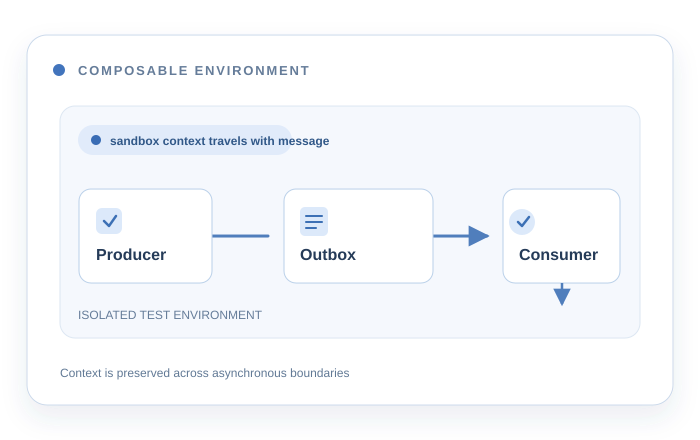

Developer inner loop
Ephemeral testing for asynchronous microservice workflows
At Miro, I collaborated on composable, ephemeral test environments for microservices, using Signadot for the inner feedback loop.
I owned the asynchronous integration across microservices: sandbox context propagation through Kafka-based Pub/Sub producers, transactional outbox writes, and consumers. I also implemented Temporal task queue routing support so workflow orchestration could be tested inside an ephemeral environment.
I also delivered a lighter local monolith startup path connected to remote services in ephemeral environments, making local development faster and more predictable.
Signadot · Java · Spring Boot · Kafka · Temporal